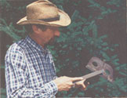
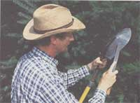
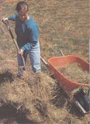

The Sleeping Garden
Garden & Yard
By jeff Taylor
October/November 1994
Every spring garden must begin the previous winter.
Outside the local library one dark October day, I met a young existentialist, about 14 or 15 years old, who drew his comfort from an apocalyptic view of the future. We began talking because he was holding the very book that made me a science fiction fan; it was written about the time he was born .
"We're history," he snorted. "The human race, I mean. The whole planet and every clown on it. Doomed. No one cares about the earth anymore. There won't be space travel in the future, man, because we're, like, going to wipe ourselves out." He proceeded to tick off pending calamities:"The economy's shot, people are starving everywhere, there's an ozone hole big enough for the Enterprise to do barrel rolls in. The fixture will be Mad Max, man: heinous mayhem, stealing and thieving, top dog wins."
It was unutterably depressing. Here was someone who had millions of dollars' worth of youth and he wouldn't give you a nickel for the future. I felt moved to disabuse him. Fortunately, I speak Y-Gen.
"You are," I said, "off to the max, 180-out, and verklempt over zilch. In the first place, I care about the earth and so does every other gardener and farmer in the world. Beginning with my little plot of dirt, I personally refuse to let the planet die. I do it with my shovel and hoe, and by preaching it in print, and by backing it up with manure-spreading and hand-weeding all summer when I could be out on a lake drinking beer in a canoe. Because I believe in it," I said.
He rolled his eyes. "Spring might not come next year. Besides, beets eat it. Turnips suck," he blasphemed, that weary Generation-Y sneer finding its old furrows on his young face.
Ah, youth. His comments put me in the awkward position of defending beets and turnips. "Hey. Those two vegetables alone have saved cities," I declared. "Ever hear of the Siege of Leningrad?"
"The which?" No, he hadn't.
"When you plant something in the ground, you're giving something back to the same world that feeds your face. Would you rather live in a garden or a parking lot? Lose your jolt and make some lemonade, dude. Personally, I'm going to plant a garden every year and one sequoia redwood sapling somewhere on this planet. Spring is coming. Get ready for it."
The days between autumn and winter weigh about ten tons apiece. Dark clouds gather in the sky and hover for weeks, a promise of pending snow. The garden beds just lie there, apparently dead but only dormant. It's all bad for the attitude, hard on even the most optimistic gardener. Before the winter solstice turns the short days around, we must find solace where we can. The TV news doesn't help, so we must watch less.
But there are addicts who have not made that wise choice.
Like cars, gardens must be winterized (an ugly Madison Avenue word, but useful). There are a number of ways to do it. Naturally, they all involve hard work but on a smaller scale than that of the previous six months.
About the time your garden is ready to retire for the winter, you can begin to think about next year's garden. But over the winter, the soil must be protected from loss of vitality and even fertilized, if possible. This is basically true for farmers and gardeners alike. Each gardener must select methods of winter garden maintenance that are most workable for his or her gardening style, climate, and time schedule. You shouldn't feel like a negligent gardener for not running the tiller in October, which is what some gardening manuals would have you do. If you didn't get a cover crop in, it's not the end of the world. Do not believe everything you read about gardening methods, except perhaps what I'm about to tell you: Do it your way, learn from your own mistakes, and don't be intimidated by the experts. Experts may disagree, but then, I'm no expert. And I say, don't knock yourself out in the next two months.
October is a busy month anyway, and the organized gardener will now glean all stalks, vines, and organic debris from each garden bed and shred it all up for compost. He or she will test the soil for an ideal pH of 6.8, amend as necessary with lime (to sweeten acid soil) or some hot chemicals like agricultural sulfur or gypsum (to acidify sour soil), drop in some organic manure, put on the aforementioned garden debris, and till everything into the soil. Once that's done, the efficient gardener will plant a cover crop to crowd out pernicious weeds and fix beneficial nitrogen.
Some gardeners swear by cover crops and some never use them. At any rate, you've got an amazing number of choices: clover, alfalfa, hairy vetch, fava beans, buckwheat, oats, ryegrass, peas, lupines, and winter rye. Take your pick. One pound of winter rye and vetch will seed 600 square feet; the rye germinates first and helps the vetch get going.
Let's suppose you have a very large garden, half an acre or larger. Cover crops, also called "green manure" for some reason shrouded in obscurity, combat erosion, pump up the soil with nutrients, control weeds, and even fight insect pests. But sowing a mulch crop means doing a lot of research. You have to "inoculate" legume seeds with a specific bacteria first, and when you plow under winter rye, sorghum, Sudan grass, and others, they release toxins capable of killing lettuce, carrots, and beets in the seedling stage. By the way, make sure you work the cover crop seeds deeply into the soil. And don't plant a cover crop too late or too early because...
Wait. This is too much work. My question is, do you happen to have a life outside of the profession of farming? Because you'll have to abandon it, given that there are only 24 hours in a day. If you garden on a small scale, a few bales of straw (dirty, rotten straw is best), a few rolls of black plastic (optional), and your trusty compost heap can obviate the need for cover crops.
Throughout the year, Joy and I haul the soiled straw out of the barn and chicken coop and plop it on the compost pile. But in the final sunny days before it gets too cold and wet to work outside, we spread it directly on the dead beds (those without-root vegetables like garlic and onions busily growing all winter) in as thick a layer as possible, and we then do the same with the contents of the compost pile. This is called sheet composting. We use only a wheelbarrow and a pair of pitchforks, make a day of it, and generally have a good time. (Our neighbors down the road don't even mulch; they just let the weeds take over, citing a gardening article that says that a cover crop of weeds will keep the soil as healthy as another cover crop. Joy and I have reservations about that, but there's no doubt that our neighbors grow a better-than-fine garden every year.)
Afterwards, we cover the beds with black plastic for a couple of weeks, just long enough to let everything rot a little more. This serves two functions: the black plastic will heat up the straw mulch and compost and also hold it in place against the wind until the compost "glues" itself to the bed. Then we refold the plastic and put it away until next spring. At that point, we will spread it out again briefly to warm up the soil before the first light cultivation, leaving it in place just long enough to catch and hold solar heat.
Some gardeners leave it on longer, cut slits, and plant their seeds (radishes, carrots, parsnips) in the openings. I don't recommend it; if the plastic shifts from wind or walking on it, you'll smother your first crop or the seedlings will be badly etiolated (a botanist's word for white and lifeless). There are a few pros and (major) cons to using plastic for any gardening purpose and we'll talk about this more, in due time and the next issue. We'll also go over soil testing; my personal view, backed by the testimony of expert gardeners, is that soil should be tested in the early spring.
Stand back and take a look. Are you finished mulching your beds? Until spring comes, you won't be using your old garden tools on a daily basis. Here it is, October going on November; do you know where your gardening tools are? Scattered all over your garden, that's where - leaning against the fences, a few along the beds, and some hiding in the garage or greenhouse. Take advantage of these idle cold days to round them up from the yard, shop, greenhouse, garden beds, and compost pile and give the heads a once-over with a file to point up the edges. First, clean off all the dirt by hoeing or shoveling a gravel pile or use a hose (if you must.) A wire brush will work and you may need a circular wire wheel and electric drill to remove rust.
S hovels and spades used on extremely rocky ground will probably need a quick treatment on the grinder and wire brush, but most tools only need the edge or points renewed with a few long strokes of the mill file; 35° is a good angle at which to sharpen shovels, spades, and hoes, one side only, please, because they're single-beveled tools.
Now spray on some penetrating oil or use a rag to wipe clean motor oil over everything. Maybe you have enough disposable income to buy only the best tools with fiberglass handles, in which case you're all set. (Always store fiberglass-handled tools indoors; water can work into microscopic pores, freeze, and create glass splinters that a porcupine would envy.) But old tools with wooden handles need a coat of linseed oil even if you plan to store them inside. Use boiled linseed oil and apply a thin coat because raw linseed oil will make your handles very sticky for a long time. Let the tool sit in a warm place or out in the sun for a day.
Linseed oil is traditional, but you're welcome to experiment with other coatings. A friend of mine prefers to use olive oil and my uncle used motor oil drained from his truck to treat handles and preserve the metal heads. Not a great idea; in fact, my uncle is dead, so I can say it's a really bad idea. Used motor oil is toxic to soil and hands.
Now go inside and take off your gardening boots. All winter, you can pull root vegetables out of the ground or grow sprouts on the windowsill, waiting for spring. It will come. Never doubt it. This is the time to plan, to order seed and tool catalogs, to dream about the gardens to come. The best garden you'll ever have is next year's garden, because it exists solely in your mind right now, and therefore has no limits. The future is what we make it. This island of earth has more hope riding on it than a lottery ticket.
|
Blessed be agriculture! There is life in the ground. ? Charles Dudley Warner |
 If winter comes, can spring be far behind? ? Shelley |
 |
|
 |
 |
|